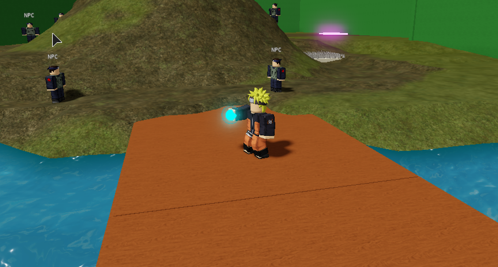
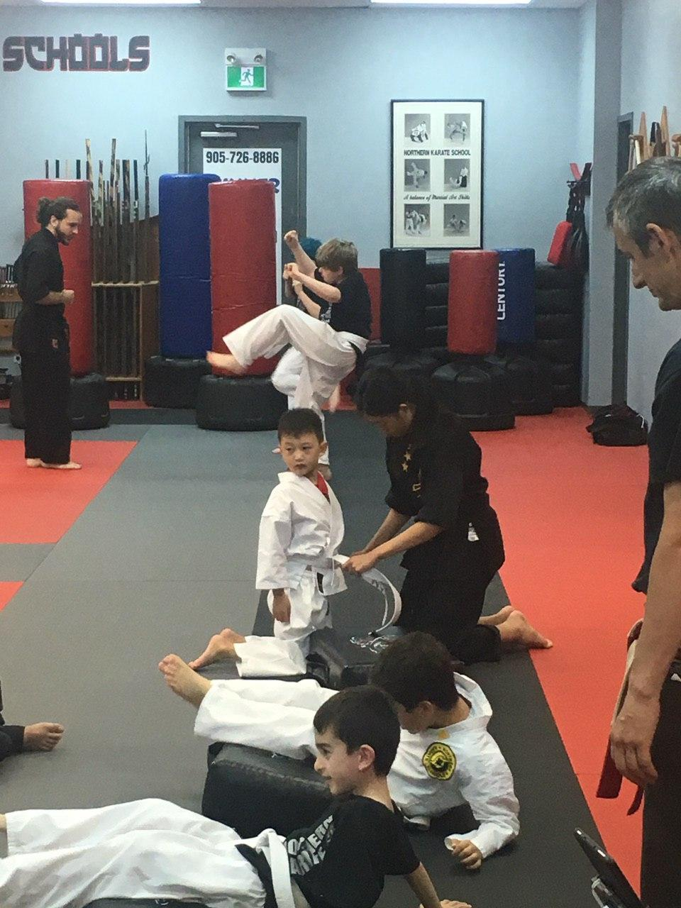
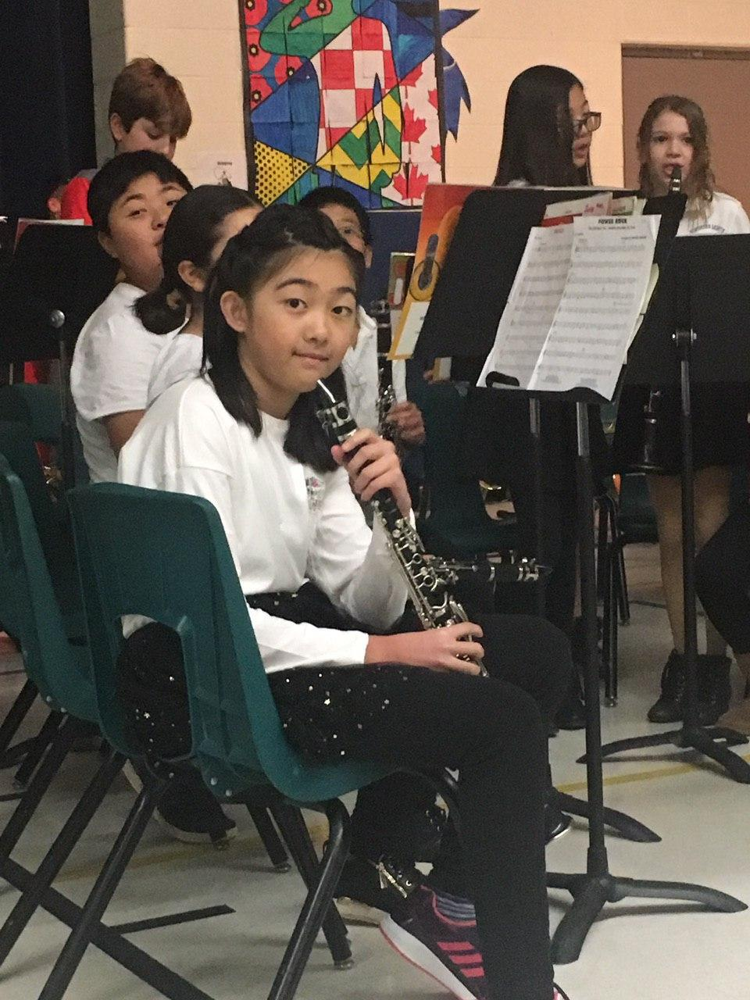
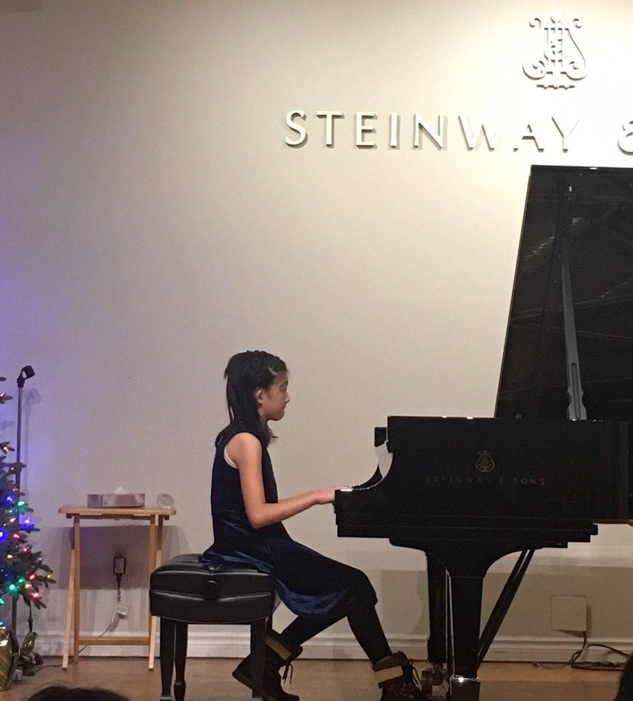
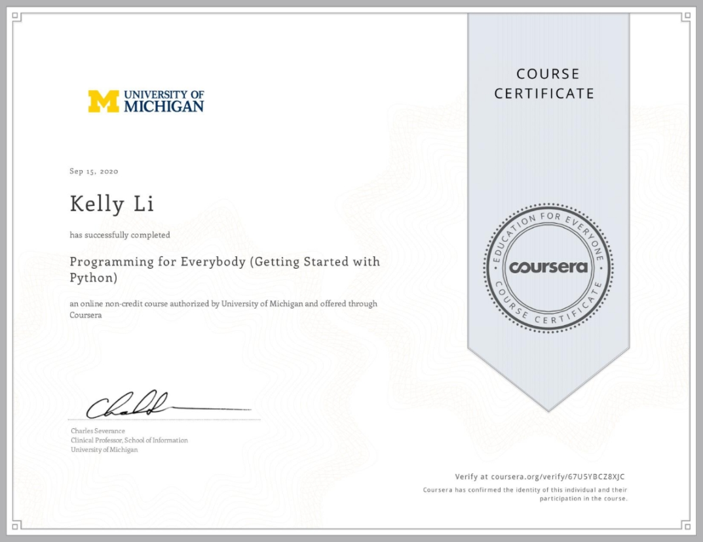
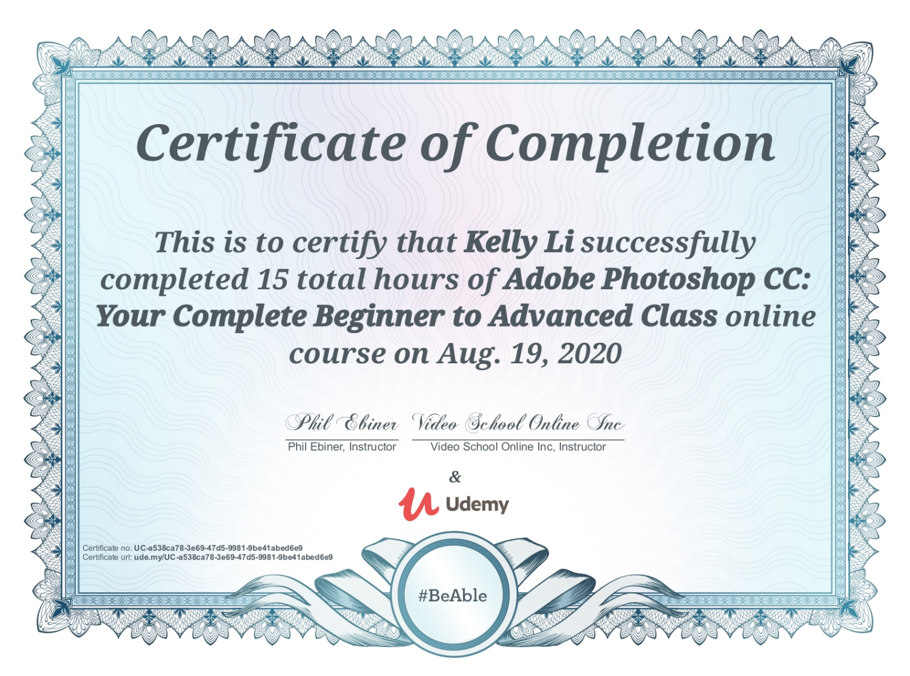
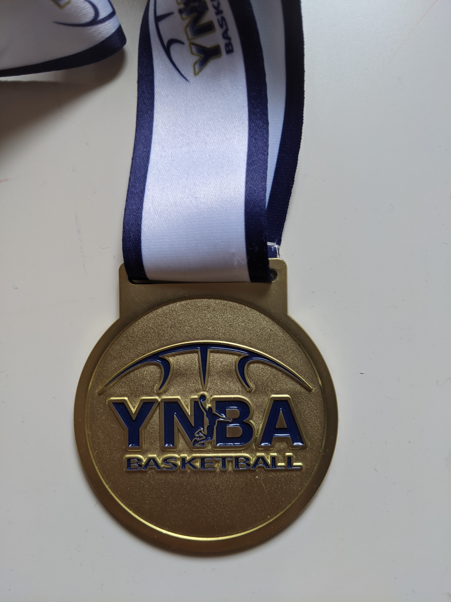
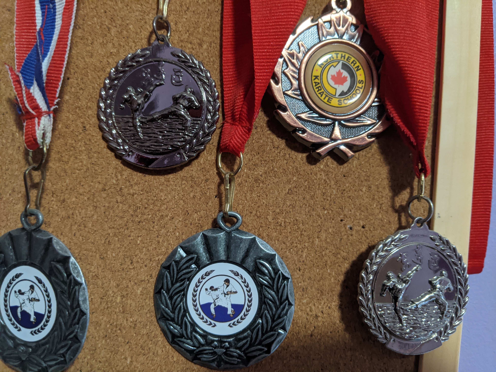

Creations
Events
Awards
About
"Thunderhawks" logo I voluntarily designed for an elementary hockey team using Adobe Photoshop 2020.
Action RPG based on the series game I programmed on the online game platform and game creation system Roblox.
Selling lemonade and cookies to raise money for SickKids charity.
Volunteering to assist with novice karate classes.
Participating in Northern Lights Public School's Junior band concert.
My solo at a piano recital. I passed the RCM level 8 theory and practical piano examinations in 2019, and am now pursuing music as a hobby even further.
Shodan black belt and official certificate received from Northern Karate Schools in Aurora, earned in 2019 and 2020 after around 5 years of training.
Certificate for completion of Programming for Everybody (Getting Started with Python) course from Coursera, by University of Michigan. Click here for the link to the original source.
Certificate for completion of Adobe Photoshop CC: Your Complete Beginner to Advanced Class course from Udemy, by Phil Ebiner. Click here for the link to the original source.
YNBA House League Fall 2019 Champion medal

YNBA House League Finalist and Participant medals
Northern Karate Schools Friendship Tournament medals
This website, personally programmed and designed by me (Kelly Li), is a virtual portfolio containing the extra information and details about my greatest achievements and demonstrations of responsible leadership. There are several sections with plenty of pictures that exhibit my creations, awards, and events I've participated in. I sincerely hope you take the time to briefly visit each of my unique accomplishments.